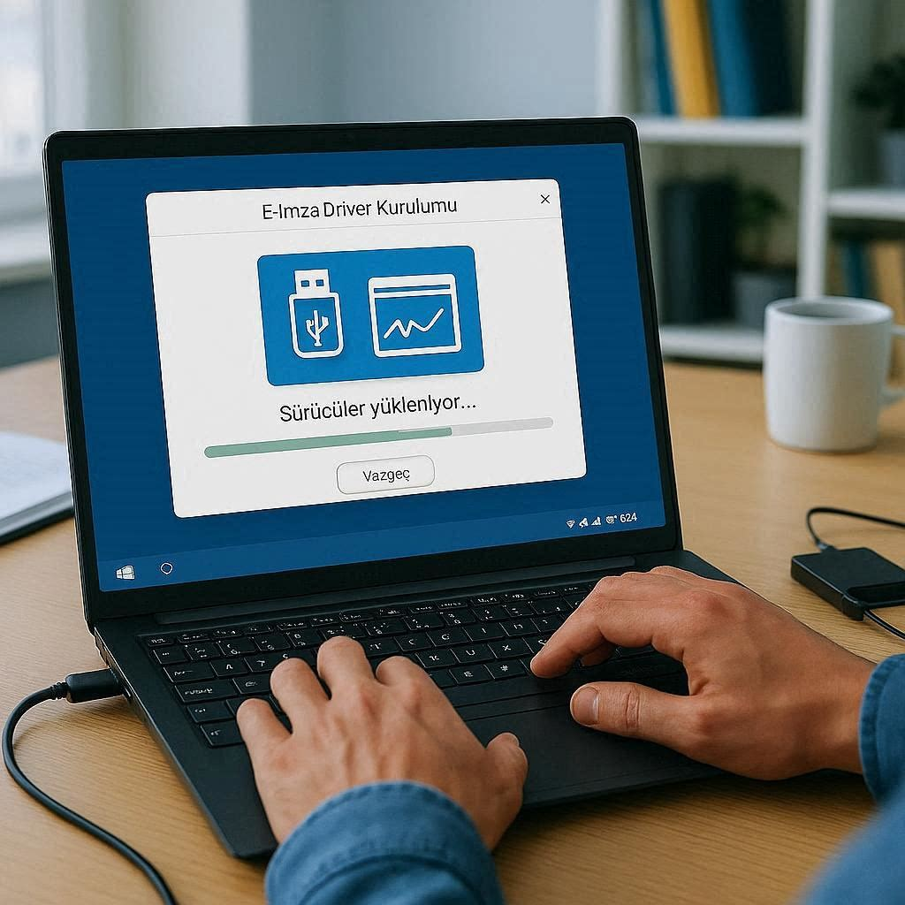

Kuruluma Başlamadan Önce
E-imza kullanmak için şu donanım ve yazılımlara ihtiyacınız vardır:
- E-imza kartı — Ayyıldız NES sertifikalı akıllı kart
- Kart okuyucu — USB bağlantılı akıllı kart okuyucu cihaz (paketinize dahil)
- Bilgisayar — Windows 10 veya Windows 11
- İnternet bağlantısı — Sürücü ve yazılım indirmek için
Adım 1: Kart Okuyucu Sürücüsünü Kurun
Kart okuyucunuzu bilgisayara USB ile bağlayın. Çoğu modern okuyucu Windows tarafından otomatik tanınır. Tanınmazsa:
- Okuyucunun marka ve modelini kontrol edin (genellikle cihaz üzerinde yazar).
- Üretici firmanın web sitesinden güncel sürücüyü indirin.
- İndirdiğiniz dosyayı çalıştırıp kurulumu tamamlayın.
- Bilgisayarınızı yeniden başlatın.
Adım 2: Java (JRE) Kurulumu
Birçok e-imza uygulaması Java altyapısı kullanır. Güncel Java sürümünü kurmak için:
- java.com adresine gidin.
- "Ücretsiz Java İndir" butonuna tıklayın.
- İndirilen dosyayı çalıştırıp kurulumu tamamlayın.
- Kurulum sonrası tarayıcınızı kapatıp tekrar açın.
Önemli: 32-bit ve 64-bit Java sürümlerini karıştırmayın. Tarayıcınız 64-bit ise 64-bit Java kurun. Emin değilseniz her ikisini de kurabilirsiniz.
Adım 3: Ayyıldız E-İmza Uygulamasını Kurun
- Ayyıldız resmi sitesinden e-imza istemci yazılımını indirin.
- Kurulum sihirbazını takip ederek tamamlayın.
- Uygulama sistem tepsisinde (saat yanında) çalışır duruma gelir.
Adım 4: E-İmza Kartını Test Edin
- Kart okuyucuya e-imza kartınızı yerleştirin (çipli yüz yukarıda).
- Ayyıldız uygulamasını açın.
- Kart bilgileri ekranda görünmelidir (ad-soyad, sertifika bilgileri).
- PIN kodunuzu girerek test imzası atın.
Adım 5: Tarayıcı Ayarları
Google Chrome / Edge
Chrome ve Edge tarayıcılarında e-imza eklentisi otomatik yüklenir. Eklenti simgesinin tarayıcı çubuğunda göründüğünden emin olun.
Mozilla Firefox
Firefox için ayrıca güvenlik cihaz modülü eklenmesi gerekebilir: Ayarlar → Gizlilik ve Güvenlik → Güvenlik Aygıtları → Yükle.
Sık Karşılaşılan Sorunlar
"Kart bulunamadı" hatası
- Kartı çıkarıp tekrar takın.
- Farklı bir USB portuna bağlayın.
- Kart okuyucu sürücüsünü yeniden kurun.
- Windows Aygıt Yöneticisi'nden okuyucunun tanınıp tanınmadığını kontrol edin.
"PIN hatalı" veya kart blokajı
- 3 yanlış PIN denemesinde kart bloke olur.
- PUK kodu ile blokaj kaldırılabilir.
- PUK kodunu da unuttuysanız yeni sertifika çıkarılması gerekir — bize ulaşın.
Java ile ilgili sorunlar
- Eski Java sürümlerini kaldırın, sadece güncel sürümü bırakın.
- Java Denetim Masası'ndan güvenlik seviyesini "Yüksek" olarak ayarlayın.
- Tarayıcı önbelleğini temizleyip tekrar deneyin.
Kurulumda sorun mu yaşıyorsunuz? Uzaktan masaüstü desteğimiz ile sorununuzu birlikte çözebiliriz. WhatsApp'tan yazmanız yeterli — ücretsiz destek sunuyoruz.